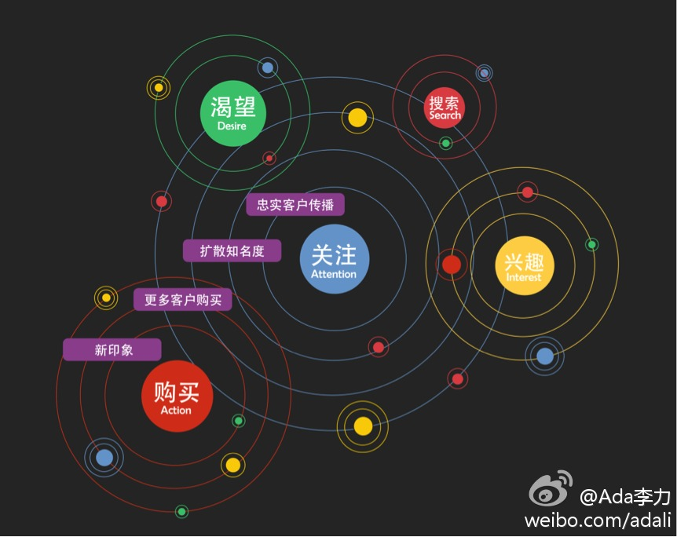

之前看@华住季琦 的书，他考察世界各地的酒店，得出结论，酒店服务业最好的还是在东亚，能真正做到“宾至如归”，跟文化和经济发展水平有关。@Ada李力:亚马逊的速度真够慢，申请Amazon EC2已经三天了，还在processing状态中。比较之下，国内的云服务提供商，效率倒是高很多。
帮转@Pivotal中国官方微博:Spring.io中国用户组第二次线下活动在5月11日在北京举行。本次活动我们围绕一个主题：“从传统IT架构到PaaS云的一次旅程”。我们从开发、测试、部署运维三个方面分别邀请了7位经验丰富的架构师依次分享，我们探索开发、测试、部署运维中的主要问题及应对。快速报名：网页链接
#社区运营#之前大家认为的社区就是论坛，而且尽各种所能，把用户导到自己的社区产品上，比如论坛。但在社交化平台越来越多的情况下，企业要做的，就是在这些平台上建自己的用户社区，企业有个CRM做对接就可以了。现阶段中国的社交化平台就是微博，微信，微淘。
社区很难凭空而建，最好是顺势而为。用户在哪里聚集，你就得把社区的据点建在哪里。@Ada李力:#社区运营#之前大家认为的社区就是论坛，而且尽各种所能，把用户导到自己的社区产品上，比如论坛。但在社交化平台越来越多的情况下，企业要做的，就是在这些平台上建自己的用户社区，企业有个CRM做对接就可以了。现阶段中国的社交化平台就是微博，微信，微淘。
#社区运营#我现在对移动端App各种不看好，因为手机屏幕有限，用户的注意力有限，移动App有两大门槛，下载安装和打开使用，中小公司烧不起。企业要做移动端化，最好是借助别人的平台，微博，微信已经帮你把移动端App的事情都干了，企业自己做好产品和服务就行。咦？这里没百度的啥事儿呀。
试过，上面搭了个Wordpress博客，网页链接 过程很方便，不过因为是试用版，不能绑定域名。而且过免费试用期后，定价颇贵，不适合创业公司//@江湖弟子:没试试微软的Azure？@Ada李力:亚马逊的速度真够慢，申请Amazon EC2已经三天了，还在processing状态中。比较之下，国内的云服务提供商，效率倒是高很多。
回复@江湖弟子:我的手机通话量不多，更倾向把手机当平板用。 //@江湖弟子:接打电话不方便，作为第一手机是绝对不合适的。走在路上不能单手操作的手机都不是第一手机的选择，从这个角度讲，我认为IPhone还是人类发展到现在以来，最好的手机。没有之一。@Ada李力:对某款7寸屏的手机又有些动心了。俺就喜欢大，大，大。对于手机来说，7寸屏已经到极限了。
不能只依赖一家平台呀，风险过高。//@难得优雅:是的，之前我们企图建立自己的论坛做客服，现在打算用微信了@Ada李力:#社区运营#之前大家认为的社区就是论坛，而且尽各种所能，把用户导到自己的社区产品上，比如论坛。但在社交化平台越来越多的情况下，企业要做的，就是在这些平台上建自己的用户社区，企业有个CRM做对接就可以了。现阶段中国的社交化平台就是微博，微信，微淘。
云服务里的“pay as you go”付费形式很好，但我目前根本估算不出所需要的量，这种付费形式最大的担心就是：因为信用卡压在别人那里，最后所花费的钱，可能会大大超出我的预计和我的承受能力，所以初期阶段，宁愿选择一个付费金额很低的包月技术，只要升级方便就可以。@江湖弟子
【时趣CEO张锐：漏斗将死，波纹方兴】对品牌来说首要任务不再是去获取强势资源了。更大的挑战是，品牌面对着社交网络，就像是面对一个平静的湖面，品牌需要不断往湖面里扔石头，让湖面上产生一个又一个的涟漪，涟漪和涟漪在波纹同步的过程中会互相影响， 网页链接 网页链接 
没那么高，一场活动两三个小时，400元，还没算路途时间。媒体上披露的工薪阶层收入，大多掺水。不然没话题性吧。//@北漂马达:比翻译挣得多啊@新浪财经:【速录师日入2千收入超普通上班族 人才供不应求】据悉，速录师多以小时计工酬，一般会议、网络直播，每小时200—400元，按天计算，一般在1200—2000元。据悉，一些白领将速录师作为兼职，每月工作6天就能拿到6000元薪水。速录师被业内誉为“白领钟点工”。专职速录师月薪过万。网页链接